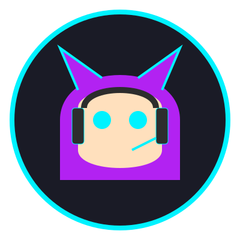

OFFLINE COMPANION

GAMER-CAT
The first local-first AI buddy that sees your screen and talks back. Built to run alongside your favorite games.
import torch;
def gamer_cat_init():
screen = see_screen()
status = new_cat()
class GamerCat(AI):
def __init__(self):
self.vision = moondream
self.brain = llama3

The first local-first AI buddy that sees your screen and talks back. Built to run alongside your favorite games.